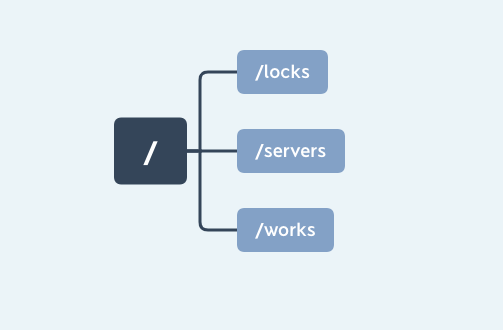
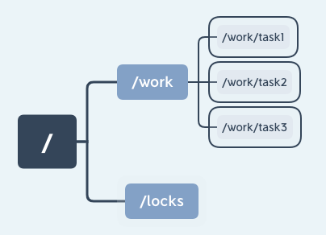
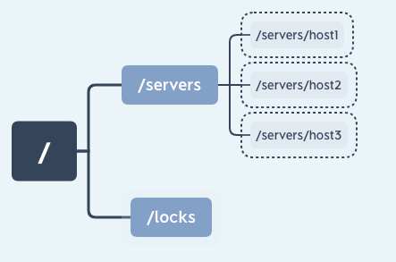
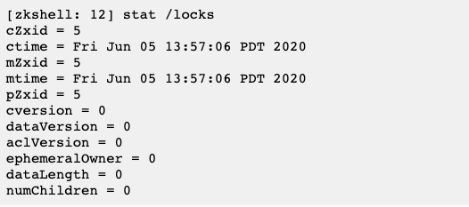
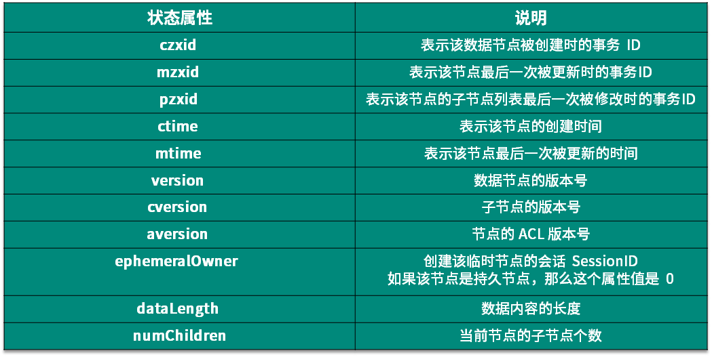
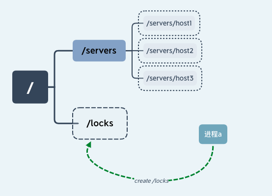
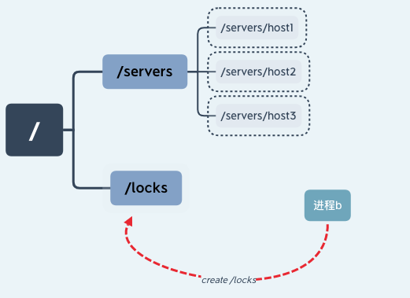
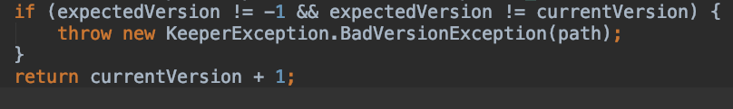

数据模型：节点的特性与应用
ZooKeeper 作为一个分布式协调服务，给出了在分布式环境下一致性问题的工业解决方案，目前流行的很多开源框架技术背后都有 ZooKeeper 的身影。那么 ZooKeeper 是如何做到这一点的，在平时开发中我们应该如何使用 ZooKeeper？要想了解这些问题，我们先要对 ZooKeeper 的基础知识进行全面的掌握。
ZooKeeper 基础知识基本分为三大模块：
- 数据模型
- ACL 权限控制
- Watch 监控
其中，数据模型是最重要的，很多 ZooKeeper 中典型的应用场景都是利用这些基础模块实现的。比如我们可以利用数据模型中的临时节点和 Watch 监控机制来实现一个发布订阅的功能。
因此，今天主要通过理论知识结合实际的应用场景来给你介绍数据模型。掌握本课时的知识对于理解 ZooKeeper 内部原理，以及在日常工作中使用好 ZooKeeper 非常重要。
数据模型
计算机最根本的作用其实就是处理和存储数据，作为一款分布式一致性框架，ZooKeeper 也是如此。数据模型就是 ZooKeeper 用来存储和处理数据的一种逻辑结构。就像我们用 MySQL 数据库一样，要想处理复杂业务。前提是先学会如何往里边新增数据。ZooKeeper 数据模型最根本的功能就像一个数据库。
现在，数据模型对我们来说还是一个比较抽象的概念，接下来我们开始部署一个开发测试环境，并在上面做一些简单的操作。来看看 ZooKeeper 的数据模型究竟是什么样的：
1、配置文件
1 | tickTime=2000 |
2、服务启动
1 | bin/zkServer.sh start |
3、使用客户端连接服务器
1 | bin/zkCli.sh -server 127.0.0.1:2181 |
4、这样单机版的开发环境就已经构建完成了，接下来我们通过 ZooKeeper 提供的 create 命令来创建几个节点，分别是：“/locks”“/servers”“/works”：
1 | create /locks |
最终在 ZooKeeper 服务器上会得到一个具有层级关系的数据结构，如下图所示，这个数据结构就是 ZooKeeper 中的数据模型。

ZooKeeper 中的数据模型是一种树形结构，非常像电脑中的文件系统，有一个根文件夹，下面还有很多子文件夹。ZooKeeper 的数据模型也具有一个固定的根节点（/），我们可以在根节点下创建子节点，并在子节点下继续创建下一级节点。ZooKeeper 树中的每一层级用斜杠（/）分隔开，且只能用绝对路径（如“get /work/task1”）的方式查询 ZooKeeper 节点，而不能使用相对路径。具体的结构你可以看看下面这张图：

znode 节点类型与特性
知道了 ZooKeeper 的数据模型是一种树形结构，就像在 MySQL 中数据是存在于数据表中，ZooKeeper 中的数据是由多个数据节点最终构成的一个层级的树状结构，和我们在创建 MySOL 数据表时会定义不同类型的数据列字段，ZooKeeper 中的数据节点也分为持久节点、临时节点和有序节点三种类型：
持久节点
我们第一个介绍的是持久节点，这种节点也是在 ZooKeeper 最为常用的，几乎所有业务场景中都会包含持久节点的创建。之所以叫作持久节点是因为一旦将节点创建为持久节点，该数据节点会一直存储在 ZooKeeper 服务器上，即使创建该节点的客户端与服务端的会话关闭了，该节点依然不会被删除。如果我们想删除持久节点，就要显式调用 delete 函数进行删除操作。
临时节点
接下来我们来介绍临时节点。从名称上我们可以看出该节点的一个最重要的特性就是临时性。所谓临时性是指，如果将节点创建为临时节点，那么该节点数据不会一直存储在 ZooKeeper 服务器上。当创建该临时节点的客户端会话因超时或发生异常而关闭时，该节点也相应在 ZooKeeper 服务器上被删除。同样，我们可以像删除持久节点一样主动删除临时节点。
在平时的开发中，我们可以利用临时节点的这一特性来做服务器集群内机器运行情况的统计，将集群设置为“/servers”节点，并为集群下的每台服务器创建一个临时节点“/servers/host”，当服务器下线时该节点自动被删除，最后统计临时节点个数就可以知道集群中的运行情况。如下图所示：

有序节点
最后我们再说一下有序节点，其实有序节点并不算是一种单独种类的节点，而是在之前提到的持久节点和临时节点特性的基础上，增加了一个节点有序的性质。所谓节点有序是说在我们创建有序节点的时候，ZooKeeper 服务器会自动使用一个单调递增的数字作为后缀，追加到我们创建节点的后边。例如一个客户端创建了一个路径为 works/task- 的有序节点，那么 ZooKeeper 将会生成一个序号并追加到该节点的路径后，最后该节点的路径为 works/task-1。通过这种方式我们可以直观的查看到节点的创建顺序。
到目前为止我们知道在 ZooKeeper 服务器上存储数据的基本信息，知道了 ZooKeeper 中的数据节点种类有持久节点和临时节点等。上述这几种数据节点虽然类型不同，但 ZooKeeper 中的每个节点都维护有这些内容：一个二进制数组（byte data[]），用来存储节点的数据、ACL 访问控制信息、子节点数据（因为临时节点不允许有子节点，所以其子节点字段为 null），除此之外每个数据节点还有一个记录自身状态信息的字段 stat。
下面我们详细说明节点的状态信息。
节点的状态结构
每个节点都有属于自己的状态信息，这就很像我们每个人的身份信息一样，我们打开之前的客户端，执行 stat /zk_test，可以看到控制台输出了一些信息，这些就是节点状态信息。

每一个节点都有一个自己的状态属性，记录了节点本身的一些信息，这些属性包括的内容我列在了下面这个表格里：

数据节点的版本
这里我们重点讲解一下版本相关的属性，在 ZooKeeper 中为数据节点引入了版本的概念，每个数据节点有 3 种类型的版本信息，对数据节点的任何更新操作都会引起版本号的变化。ZooKeeper 的版本信息表示的是对节点数据内容、子节点信息或者是 ACL 信息的修改次数。
使用 ZooKeeper 实现锁
学习了 ZooKeeper 的数据模型和数据节点的相关知识，下面我们通过实际的应用进一步加深理解。
设想这样一个情景：一个购物网站，某个商品库存只剩一件，客户 A 搜索到这件商品并准备下单，但在这期间客户 B 也查询到了该件商品并提交了购买，于此同时，客户 A 也下单购买了此商品，这样就出现了只有一件库存的商品实际上卖出了两件的情况。为了解决这个问题，我们可以在客户 A 对商品进行操作的时候对这件商品进行锁定从而避免这种超卖的情况发生。
实现锁的方式有很多中，这里我们主要介绍两种：悲观锁、乐观锁。
悲观锁
悲观锁认为进程对临界区的竞争总是会出现，为了保证进程在操作数据时，该条数据不被其他进程修改。数据会一直处于被锁定的状态。
我们假设一个具有 n 个进程的应用，同时访问临界区资源，我们通过进程创建 ZooKeeper 节点 /locks 的方式获取锁。
线程 a 通过成功创建 ZooKeeper 节点“/locks”的方式获取锁后继续执行，如下图所示：

这时进程 b 也要访问临界区资源，于是进程 b 也尝试创建“/locks”节点来获取锁，因为之前进程 a 已经创建该节点，所以进程 b 创建节点失败无法获得锁。

这样就实现了一个简单的悲观锁，不过这也有一个隐含的问题，就是当进程 a 因为异常中断导致 /locks 节点始终存在，其他线程因为无法再次创建节点而无法获取锁，这就产生了一个死锁问题。针对这种情况我们可以通过将节点设置为临时节点的方式避免。并通过在服务器端添加监听事件来通知其他进程重新获取锁。
乐观锁
乐观锁认为，进程对临界区资源的竞争不会总是出现，所以相对悲观锁而言。加锁方式没有那么激烈，不会全程的锁定资源，而是在数据进行提交更新的时候，对数据的冲突与否进行检测，如果发现冲突了，则拒绝操作。
乐观锁基本可以分为读取、校验、写入三个步骤。CAS（Compare-And-Swap），即比较并替换，就是一个乐观锁的实现。CAS 有 3 个操作数，内存值 V，旧的预期值 A，要修改的新值 B。当且仅当预期值 A 和内存值 V 相同时，将内存值 V 修改为 B，否则什么都不做。
在 ZooKeeper 中的 version 属性就是用来实现乐观锁机制中的“校验”的，ZooKeeper 每个节点都有数据版本的概念，在调用更新操作的时候，假如有一个客户端试图进行更新操作，它会携带上次获取到的 version 值进行更新。而如果在这段时间内，ZooKeeper 服务器上该节点的数值恰好已经被其他客户端更新了，那么其数据版本一定也会发生变化，因此肯定与客户端携带的 version 无法匹配，便无法成功更新，因此可以有效地避免一些分布式更新的并发问题。
在 ZooKeeper 的底层实现中，当服务端处理 setDataRequest 请求时，首先会调用 checkAndIncVersion 方法进行数据版本校验。ZooKeeper 会从 setDataRequest 请求中获取当前请求的版本 version，同时通过 getRecordForPath 方法获取服务器数据记录 nodeRecord， 从中得到当前服务器上的版本信息 currentversion。如果 version 为 -1，表示该请求操作不使用乐观锁，可以忽略版本对比；如果 version 不是 -1，那么就对比 version 和 currentversion，如果相等，则进行更新操作，否则就会抛出 BadVersionException 异常中断操作。

总结
本文主要介绍了ZooKeeper的基础知识点——数据模型。并深入介绍了节点类型、stat 状态属性等知识，并利用目前学到的知识解决了集群中服务器运行情况统计、悲观锁、乐观锁等问题。这些知识对接下来的课程至关重要，请务必掌握。
了解了 ZooKeeper 数据模型的基本原理后，我们来思考一个问题：为什么 ZooKeeper 不能采用相对路径查找节点呢？
这是因为 ZooKeeper 大多是应用场景是定位数据模型上的节点，并在相关节点上进行操作。像这种查找与给定值相等的记录问题最适合用散列来解决。因此 ZooKeeper 在底层实现的时候，使用了一个 hashtable，即 hashtableConcurrentHashMap<String, DataNode> nodes ，用节点的完整路径来作为 key 存储节点数据。这样就大大提高了 ZooKeeper 的性能。